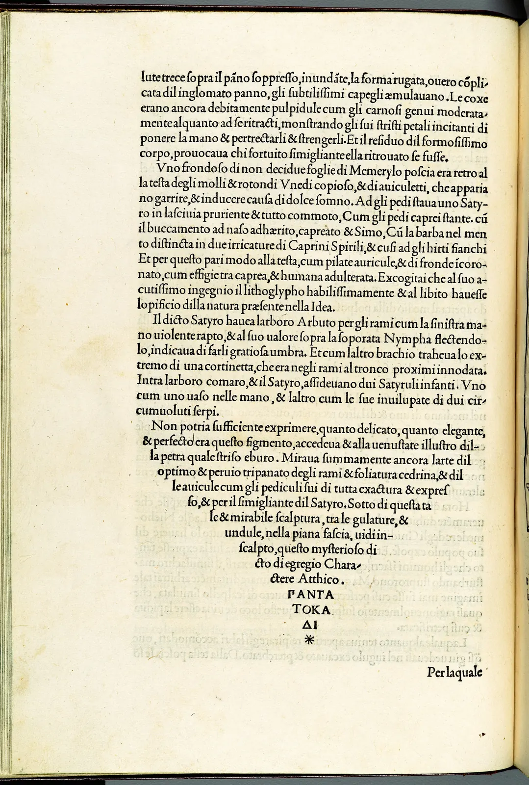

정렬과 단락
신문 기사는 양쪽 끝이 칼로 자른 듯 반듯하고, 휴대폰으로 읽는 블로그 글은 오른쪽 끝이 들쭉날쭉하다. 청첩장은 가운데로 모이고, 그림 옆의 짧은 설명은 오른쪽에 붙는다. 글줄의 끝을 어떻게 처리할지는 사소해 보이지만, 그 선택이 낱말 사이의 간격과 줄바꿈 위치, 단락의 모양을 한꺼번에 바꾼다. 이 장은 같은 글을 네 가지로 맞춰 보고, 양끝 맞추기가 남기는 틈과 그 틈을 메우는 방법(하이픈, 글자 단위 줄바꿈, 단락 전체 줄나눔)을 비교한다. 그리고 단락을 나누는 법과 외톨이 줄을 다룬다.
- 왼끝·양끝·가운데·오른끝 맞추기의 성격과 쓰임을 구별한다.
- 양끝 맞추기가 낱말 사이를 벌려 만드는 강물을 찾고, 그 원인을 글줄 길이와 줄바꿈 방식에서 찾는다.
- 라틴 글자의 하이픈 넣기와 한글의 어절·글자 단위 줄바꿈을 비교하고, 줄 머리·줄 끝 금칙을 안다.
- 한 줄씩 끊는 줄나눔과 단락 전체를 보는 줄나눔의 차이를 이해한다.
- 들여쓰기와 단락 간격으로 단락을 나누고, 외톨이 줄과 짧은 끝줄을 고친다.
줄 끝을 어떻게 할 것인가
글자가 모여 한 줄이 되면, 그 줄은 대개 단의 폭과 정확히 같지 않다. 낱말이 어디서 끝나느냐에 따라 조금 모자라거나, 다음 낱말이 들어가지 않아 남는다. 이 남는 폭을 어디에 둘지가 정렬(Alignment)의 문제다. 선택지는 넷이다. 남는 폭을 줄 오른쪽에 모두 두면 왼쪽 끝이 반듯한 왼끝 맞추기(Flush left, Ragged right), 왼쪽에 두면 오른끝 맞추기(Flush right), 양쪽에 반씩 나누면 가운데 맞추기(Centered), 줄 안의 낱말 사이에 나눠 넣어 양쪽 끝을 다 반듯하게 하면 양끝 맞추기(Justified)다.
읽기에서 가장 중요한 끝은 왼쪽 끝이다. 한글과 라틴 글자를 가로로 쓸 때 눈은 한 줄을 다 읽으면 왼쪽으로 크게 되돌아가 다음 줄 머리를 찾는다. 줄 머리가 늘 같은 세로선 위에 있으면 이 되돌아가기가 쉽다. 왼끝 맞추기와 양끝 맞추기가 긴 본문에 쓰이고, 가운데·오른끝 맞추기가 짧은 글에 쓰이는 까닭이다. CompositionBook의 지면 구성 장에서 본 "보이지 않는 정렬선"이 글줄 안에서 일하는 모습이다.
네 가지 맞추기
아래에서 같은 단락을 네 가지로 맞춰 보고, 단의 폭을 바꿔 본다. 폭은 한글 글자 수로 나타냈다. "공백 보기"를 켜면 낱말 사이의 공백이 색으로 드러나는데, 기본 폭보다 넓을수록 진하다.
같은 단락, 네 가지 끝
왼끝 맞추기의 장점은 간격이 일정하다는 것이다. 낱말 사이가 늘 같아서 글줄의 회색이 고르고, 글자를 짠 사람이 손대지 않아도 대체로 괜찮다. 단점은 오른쪽 끝의 들쭉날쭉함, 곧 래그(Rag)다. 래그가 너무 심하거나, 줄 끝이 한 줄 걸러 길고 짧게 톱니처럼 반복되거나, 래그가 우연히 기울어진 쐐기 모양을 만들면 눈에 거슬린다. 그래서 공들인 왼끝 조판에서는 줄 끝이 부드러운 물결을 이루도록 몇 줄의 줄바꿈 위치를 손으로 고치기도 한다.
가운데 맞추기는 대칭이라 격식 있고 조용하다. 청첩장, 기념비의 글, 책의 속표지, 시의 제목처럼 줄이 몇 개 안 되고 한 줄 한 줄이 따로 읽히는 글에 맞다. 이때는 줄바꿈 위치가 곧 의미 단위가 되도록 손으로 끊는다. "여름 낭독 모임 / 8월 7일 토요일 / 책방 E 2층"처럼. 오른끝 맞추기는 오른쪽에 있는 무엇에 붙어야 할 때 쓴다. 그림 왼쪽에 놓인 캡션, 표의 숫자 열(자릿수를 맞추려면 오른끝이나 소수점 맞추기), 편지 끝의 날짜와 서명이 그렇다. 둘 다 서너 줄을 넘는 본문에는 잘 맞지 않는다.
양끝 맞추기와 강물
양끝 맞추기는 줄마다 남는 폭을 그 줄의 낱말 사이에 나눠 넣는다. 남는 폭이 같아도 낱말 사이가 적은 줄일수록 공백 하나가 많이 벌어진다. 이렇게 벌어진 공백들이 위아래 줄에서 우연히 비슷한 자리에 놓이면, 글 덩어리 속에 흰 물길이 세로로 흐르는 것처럼 보인다. 이것을 강물(River)이라고 한다. 강물은 글을 읽는 동안에는 잘 의식되지 않지만, 지면을 한눈에 볼 때 회색 덩어리를 찢어 놓는다.
강물은 가까이 보면 오히려 잘 안 보인다. 글자를 읽어 버리기 때문이다. 아래에서 "흐리게 보기"를 켜면 글자가 뭉개지고 공백의 흰 모양만 남는다. 책을 거꾸로 들거나 눈을 가늘게 뜨는 것과 같은 효과다.
흐르는 흰 물길
강물을 줄이는 방법은 결국 공백이 크게 벌어지지 않게 하는 것이다. 글줄을 넓히면 한 줄의 공백 수가 늘어 남는 폭이 잘게 나뉜다. 낱말 안에서도 줄을 바꿀 수 있게 하면(라틴 글자의 하이픈, 한글의 글자 단위 줄바꿈) 남는 폭 자체가 줄어든다. 한 줄씩이 아니라 단락 전체를 보고 줄바꿈 위치를 고르면 벌어짐을 여러 줄에 고르게 나눌 수 있다. 그리고 마지막 방법은 글을 고치는 것이다. 이 넷을 차례로 본다.

하이픈: 낱말을 끊어 틈을 메운다
라틴 글자 조판에서 강물을 줄이는 가장 오래된 방법은 하이픈 넣기(Hyphenation)다. 줄 끝에 걸린 긴 낱말을 음절 경계에서 끊고 하이픈(-)을 붙여 나머지를 다음 줄로 넘긴다. 남는 폭이 낱말 하나에서 음절 하나 크기로 줄어드니 공백이 덜 벌어진다. 어디서 끊어도 되는지는 언어마다 규칙이 다르다. 영어의 "neigh-bour-hood"는 되지만 "neighb-ourhood"는 안 된다. 조판 프로그램은 사전이나 끊기 패턴으로 이 자리를 찾는다. 오늘날 널리 쓰이는 패턴 방식은 프랭크 리앙(Frank Liang)이 1983년 학위 논문에서 TeX을 위해 만든 것이다.
아래 영어 단락은 끊어도 되는 자리를 미리 표시해 둔 가상의 책자 머리말이다. 하이픈을 켜고 끄며 공백을 비교한다.
하이픈이 메우는 틈
하이픈에도 규칙이 따른다. 너무 짧은 조각을 남기지 않는다(앞에 두 글자, 뒤에 세 글자 이상이 흔한 기본값이다). 하이픈이 세 줄 넘게 연달아 쌓이지 않게 한다. 고유명사, 숫자, 단락의 마지막 낱말, 쪽의 마지막 줄은 끊지 않는 편이 좋다. 그리고 하이픈은 양끝 맞추기만의 도구가 아니다. 왼끝 맞추기에서도 가볍게 쓰면 래그가 부드러워진다.
한글에는 하이픈이 없다. 한글은 낱말 안에서 줄을 바꿀 때 아무 표시도 붙이지 않는다. 그러면 한글 조판은 "낱말 안에서 끊느냐 마느냐"를 어떻게 정할까.
한글의 줄바꿈: 어절이냐 글자냐
한글 조판에는 줄을 바꾸는 단위가 둘이다. 띄어쓰기로 나뉜 어절(Eojeol, 띄어 쓴 말 덩어리) 단위로만 줄을 바꾸는 방식과, 음절 하나하나를 경계로 어디서든 줄을 바꾸는 글자 단위 줄바꿈(Syllable breaking)이다. 한자와 일본어 조판은 띄어쓰기가 없어 원래 글자 단위로 줄을 바꾼다. 한글도 띄어쓰기가 자리 잡기 전에는 그랬고, 지금도 한국의 책과 신문에서 낱말 중간에서 줄을 바꾸고 양끝을 맞춘 조판을 흔히 볼 수 있다. 반면 웹 브라우저는 한국어 글을 기본적으로 글자 단위로 바꾸고, CSS의 word-break: keep-all을 주면 어절 단위로 바꾼다.
두 방식은 서로 반대의 대가를 치른다. 글자 단위로 끊으면 줄 끝까지 글자를 채울 수 있어 공백이 거의 벌어지지 않는다. 대신 "골목"이 "골/목"으로, "그림자가"가 "그림/자가"로 나뉘어 낱말을 두 줄에 걸쳐 읽어야 한다. 어절 단위로 끊으면 낱말은 온전하지만 남는 폭이 커져 양끝 맞추기에서 공백이 벌어진다. 아래에서 두 방식과, 그 사이를 메우는 두 장치를 비교한다. "단락 전체 줄나눔"은 줄바꿈 위치를 한 줄씩 정하지 않고 단락 전체에서 벌어짐의 합이 가장 작도록 고르고, "글자 사이 나눔"은 남는 폭의 일부를 공백 대신 글자 사이에 조금씩 나눈다.
어절 단위와 글자 단위
단락 전체 줄나눔은 컴퓨터 조판의 오래된 성과다. 도널드 커누스와 마이클 플래스(Donald Knuth & Michael Plass)는 1981년 논문 「단락을 줄로 나누기」(Breaking Paragraphs into Lines)에서, 줄마다 벌어짐에 벌점을 매기고 단락 전체 벌점이 가장 작은 줄바꿈 조합을 찾는 방법을 발표했다. 앞 줄에서 조금 덜 채우면 뒤의 줄이 훨씬 좋아질 수 있다는 것을 계산으로 찾는다. TeX이 이 방법을 쓰고, 여러 조판 프로그램이 비슷한 기능을 갖추고 있다. 이 장의 시뮬레이터는 그 생각을 단순화한 모델이다. 반면 웹 브라우저는 대개 한 줄씩 채우는 방식이라, 웹에서 양끝 맞추기를 하면 공백이 크게 벌어지기 쉽다.
어느 쪽이 옳은지는 정해져 있지 않다. 글자 단위 줄바꿈은 오랜 관습이고 지면의 회색이 고르다. 어절 단위 줄바꿈은 낱말을 온전히 두어 짧은 글이나 큰 글자에서 읽기 편하다는 평가가 많다. 다만 한글 줄바꿈 단위에 따른 읽기 속도나 이해도 차이를 분명하게 보여 주는 연구 결과는 이 책이 확인한 범위에서는 찾기 어렵다. 그러니 지면의 조건, 곧 글줄 길이, 정렬, 쓸 수 있는 도구를 보고 고른다. 글줄이 길고 단락 전체 줄나눔을 쓸 수 있으면 어절 단위로도 양끝을 고르게 맞출 수 있다. 글줄이 짧고 한 줄씩 끊는 도구라면, 어절 단위 양끝 맞추기는 공백이 벌어지기 쉽다.
단락을 나누는 법
글은 줄 다음에 단락으로 묶인다. 단락이 바뀌는 곳을 보여 주는 방법은 크게 둘이다. 첫 줄을 안쪽으로 밀어 넣는 들여쓰기(Indent)와, 단락 사이에 빈 간격을 두는 단락 간격(Paragraph spacing)이다. 책은 오래 들여쓰기를 써 왔고, 웹과 업무 문서는 단락 간격을 많이 쓴다. 둘 다 쓰는 것은 같은 신호를 두 번 주는 셈이라 대개 하나만 고른다.
들여쓰기는 공간을 아끼고 기준선 격자를 깨지 않는다. 대신 앞 단락의 마지막 줄이 꽉 차 있을 때는 들여쓰기만이 경계를 알려 주므로 꼭 필요하다. 한글 책에서는 한 자(1 em) 들여쓰기가 흔하다. 소제목이나 장 첫머리 바로 다음 단락은 경계가 이미 분명하니 들여쓰지 않는 관습이 있다. 단락 간격은 경계가 뚜렷하고 훑어 읽기 좋지만 공간을 쓰고, 간격이 한 줄의 정수 배가 아니면 기준선 격자가 어긋난다(9장). 아래에서 바꿔 본다.
들여쓰기와 단락 간격
단락의 길이도 정렬의 일부다. 한 단락이 한 쪽을 넘으면 회색 벽이 되고, 한두 문장짜리 단락만 이어지면 지면이 잘게 부서진다. 휴대폰 화면에서는 같은 단락도 줄 수가 두세 배로 늘어나 길어 보이므로, 웹 글은 종이보다 단락을 조금 짧게 끊는 경우가 많다. 이것은 조판보다 글쓰기의 문제지만, 조판하는 사람이 가장 먼저 알아챈다.
외톨이 줄과 짧은 끝줄
단이나 쪽이 바뀌는 곳에서 단락이 잘리면 작은 사고가 생긴다. 단락의 첫 줄 하나만 단의 맨 아래에 남고 나머지가 다음 단으로 넘어가는 것을 오펀(Orphan), 단락의 마지막 줄 하나만 다음 단이나 쪽의 맨 위로 넘어가는 것을 위도(Widow)라고 한다. 우리말로는 둘을 묶어 외톨이 줄이라고 부르기도 한다. 용어의 뜻은 책마다 조금씩 다르게 쓰이지만, 고칠 대상은 같다. 특히 짧은 마지막 줄이 쪽 머리에 홀로 서면 쪽 위쪽의 흐름선이 끊겨 보인다. 단락 안의 문제도 있다. 마지막 줄이 한두 글자뿐인 짧은 끝줄은 단락 사이에 구멍을 낸다.
단이 바뀌는 곳
외톨이 줄을 고치는 방법은 셋이다. 하나는 단이나 쪽의 길이를 한 줄 줄이거나 늘리는 것인데, 펼친 두 쪽의 바닥이 어긋나는 대가가 있다. 펼침면의 두 쪽을 같이 한 줄 줄이면 바닥은 맞지만 다른 펼침면과 다르다. 둘째는 앞 단락 몇 줄의 공백이나 글자 사이를 아주 조금 조여 한 줄을 당기거나 풀어 한 줄을 밀어내는 것이다. 셋째는 역시 문장을 고치는 것이다. 웹에서는 CSS의 orphans, widows 속성이 인쇄와 다단 레이아웃에서 최소 줄 수를 정하고, 짧은 끝줄은 text-wrap: pretty가 일부 브라우저에서 줄여 준다. 지원하지 않는 브라우저에서는 그냥 무시되므로 넣어 두어도 해가 없다.
책자와 웹, 두 지면의 정렬
마지막 시뮬레이터는 이 장의 선택지를 모두 모았다. 같은 머리말 세 단락을 종이 책자와 휴대폰, 넓은 화면에서 짜 본다. 책자는 9장에서 정한 33자 판면에 명조 계열, 화면은 고딕 계열 글꼴로 그린다. 폭 측정을 "이 장의 모델"로 바꾸면 한글 1자, 공백 0.25자처럼 고정된 폭으로 계산해 케이스의 숫자를 그대로 확인할 수 있다.
책자와 웹의 단락 설계기
정렬과 줄바꿈은 따로 정할 수 없다. 양끝 맞추기를 고르면 줄바꿈 단위와 줄나눔 방식이 공백의 품질을 결정하고, 왼끝 맞추기를 고르면 공백은 저절로 고르지만 래그를 돌봐야 한다. 그리고 도구가 정한다. 같은 사람이 같은 글을 짜도 종이 책자에서는 단락 전체 줄나눔을 쓸 수 있고, 웹 브라우저에서는 대개 쓸 수 없다. 좋은 정렬은 원칙 하나를 모든 지면에 밀어붙이는 것이 아니라, 지면마다 그 도구로 가장 고른 회색을 만드는 조합을 찾는 일이다.
서윤의 작업 노트
양끝을 맞췄더니 어절 사이가 벌어졌다
9장에서 「골목 산책」의 판이 섰다. 판면 폭 33자, 본문 3.5 mm, 줄 보내기 5.5 mm. 서윤은 책다운 반듯한 지면을 원해서 본문을 양끝 맞추기로 흘렸다. 웹에서 늘 쓰던 대로 낱말이 갈라지지 않게 어절 단위로 줄을 바꾸고, 단락 첫 줄은 한 자 들여썼다. 머리말 세 단락의 교정쇄를 뽑아 보니 몇 줄의 어절 사이가 눈에 띄게 벌어져 있었다. "오후 네 시가 지나면 처마 그림자가 길 건너"로 끝나는 셋째 줄은 다음 어절 "담장까지"가 들어가지 못해 남은 폭이 공백 아홉 개에 나뉘어 있었다.
이 장의 모델로 계산하면(한글 1자, 공백 기본 0.25자), 첫 시안의 가장 넓은 공백은 0.67자로 기본의 2.7배였고, 공백이 있는 열두 줄 가운데 두 줄이 0.5자를 넘었다. 서윤은 먼저 글자 단위 줄바꿈을 시험했다. 가장 넓은 공백은 0.37자로 고르게 줄었지만 열두 줄 가운데 열 줄이 낱말 중간에서 끊겼다. "철/물점", "나/무", "만/큼". 둘째 단락의 마지막 줄에는 "다." 두 글자만 남았다. 주인은 교정쇄를 소리 내어 읽다가 줄이 바뀔 때마다 멈칫했다. "할머니 손님들은 이걸 손가락으로 짚어 가며 읽으실 텐데요."
한도경은 활판 시절 이야기를 꺼냈다. "우리는 줄마다 공목을 끼워서 맞췄어. 넓게 벌어지는 줄이 나오면 식자공이 편집자한테 가서 낱말 하나만 바꿔 달라고 했지." 서윤은 조판 프로그램의 단락 전체 줄나눔을 켜 보았다. 같은 어절 단위인데 첫 단락 셋째 줄이 "담장까지"를 받아들이며 줄바꿈 위치가 몇 군데 바뀌었고, 열다섯 줄이 열네 줄이 되었다. 가장 넓은 공백은 0.48자로 모든 줄이 0.5자 안에 들었다. 글자 사이 나눔(최대 0.03자)을 켜도 이 원고에서는 쓸 일이 없었지만, 다른 원고를 위해 안전장치로 남겨 두었다. 그래도 0.5자를 넘는 줄이 생기면 그 줄은 주인과 상의해 문장을 고치기로 했다.
웹은 따로 정했다. 같은 단락을 휴대폰 폭(예로 20자)에서 한 줄씩 끊는 양끝 맞추기로 짜면 이 장의 모델로 가장 넓은 공백이 1.17자, 19줄 가운데 5줄이 0.5자를 넘었다. 브라우저는 단락 전체 줄나눔을 하지 않으니, 서윤은 웹 본문을 왼끝 맞추기로 두었다. 단락은 들여쓰기 대신 단락 사이 간격으로 나눴다. 화면에서는 기준선 격자를 지킬 일이 없고, 짧게 끊긴 단락을 훑어 읽기 좋기 때문이다.
최대 0.48자
첫 시안 · 한 줄씩최대 0.67자
글자 단위0.37자 · 끊김 10줄
웹 20자 양끝(버림)최대 1.17자
text-align: start), 어절 단위(word-break: keep-all), 긴 주소만 어디서든 끊기(overflow-wrap: anywhere), 들여쓰기 없이 단락 사이 간격 1 em, 짧은 끝줄은 text-wrap: pretty로 지원 브라우저에서만 다듬는다.핵심 정리
- 정렬은 줄마다 남는 폭을 어디에 두느냐의 문제다. 왼끝·오른끝·가운데 맞추기는 줄의 위치를 옮기고, 양끝 맞추기만 줄 안의 낱말 사이를 바꾼다.
- 긴 본문은 줄 머리가 반듯한 왼끝이나 양끝 맞추기로 짠다. 가운데 맞추기는 줄마다 따로 읽히는 짧은 글에, 오른끝 맞추기는 오른쪽의 무엇에 붙어야 할 때 쓴다.
- 양끝 맞추기에서 벌어진 공백이 위아래로 이어지면 강물이 된다. 흐리게 보거나 거꾸로 들면 잘 보인다. 글줄이 짧을수록, 낱말 안에서 끊지 못할수록 심해진다.
- 라틴 글자는 하이픈으로 낱말을 끊어 틈을 메운다. 짧은 조각, 세 줄 넘는 연속 하이픈, 고유명사 끊기를 피한다. 한글은 표시 없이 끊으며 어절 단위와 글자 단위 줄바꿈이 서로 반대의 대가를 치른다.
- 단락 전체를 보는 줄나눔(Knuth와 Plass, 1981)은 벌어짐을 여러 줄에 고르게 나눈다. 웹 브라우저는 대개 한 줄씩 끊으므로 웹의 양끝 맞추기는 공백이 크게 벌어지기 쉽다.
- 단락은 들여쓰기(공간을 아끼고 격자를 지킨다)나 단락 간격(경계가 또렷하다) 가운데 하나로 나눈다. 단락 간격은 줄 간격의 정수 배가 아니면 기준선을 깬다.
- 단락의 첫 줄이나 마지막 줄 하나만 단·쪽 경계에 남는 외톨이 줄과 한두 글자짜리 짧은 끝줄은 단 길이 조정, 미세한 간격 조정, 문장 고치기로 고친다.
확인 퀴즈
1. 휴대폰 화면의 좁은 글줄에서 한국어 본문을 text-align: justify와 word-break: keep-all로 짰더니 몇 줄의 어절 사이가 한 글자보다 넓게 벌어졌다. 가장 알맞은 설명은?
2. 양끝 맞추기 지면에서 강물을 찾는 방법으로 가장 알맞은 것은?
3. 양끝 맞추기 책의 한 쪽이 앞 단락의 마지막 한 줄("넘어가 주시기를.")로 시작한다. 이것을 부르는 말과 고치는 방법으로 알맞은 것은?
4. 기준선 격자를 쓰는 책자에서 단락을 나누려 한다. 격자를 깨지 않는 방법은?
출처와 글꼴
- Donald E. Knuth, Michael F. Plass, "Breaking Paragraphs into Lines", Software: Practice and Experience 11(11), 1981. (단락 전체 줄나눔, 요약. 이 장의 모델은 단순화한 것이다.)
- Franklin Mark Liang, Word Hy-phen-a-tion by Com-put-er, 박사 학위 논문, Stanford University, 1983. (패턴 방식의 하이픈 넣기, 요약)
- Robert Bringhurst, The Elements of Typographic Style. 하이픈·외톨이 줄·래그에 관한 관습(요약).
- W3C, Requirements for Hangul Text Layout and Typography(KLREQ), W3C Group Note. 한국어의 줄바꿈 단위와 금칙.
- CSS Text Module Level 3·4(W3C):
word-break,overflow-wrap,text-wrap; CSS Fragmentation:orphans,widows. - 그림 2: The Metropolitan Museum of Art, 『폴리필로의 꿈』(23.73.1), 공공 도메인.
- 글꼴: Noto Serif KR, Noto Sans KR(Google·Adobe), Source Serif 4(Adobe, Frank Grießhammer). 모두 SIL Open Font License 1.1, Google Fonts에서 불러온다.